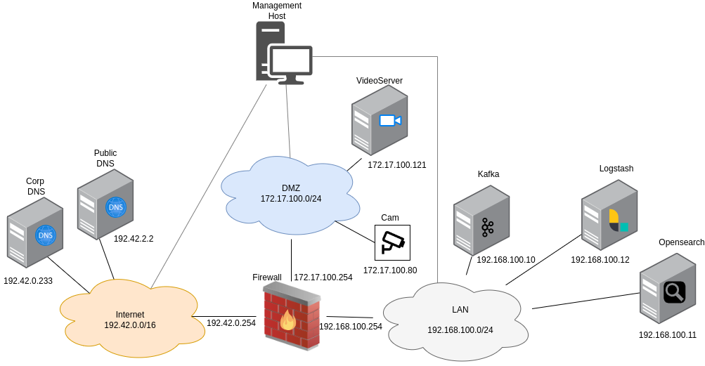

Deploy log pipeline
The log pipeline consists of several integrated tools that collect, process, and store logs from various components of the AttackBed infrastructure. The pipeline enables aggregation and retrieval of logs for analysis.
Note
The log pipeline is optional and only required if real-time log collection is needed. Scenarios can be run without it, with logs collected post-execution via the gather.yml script and the atb-kyoushi-gather role
Architecture

- Filebeat:
- Collects logs locally from individual hosts and forwards them to Kafka.
- Pre-installed but disabled by default on the VideoServer, Firewall, and Corp DNS.
- Kafka:
- Acts as a message broker, receiving logs from Filebeat.
- Makes sure that logs are available for processing even under high load.
- Logstash:
- Consumes logs from Kafka.
- Transforms the raw logs into structured data and prepares them for indexing.
- OpenSearch:
- Stores processed logs for querying and visualization.
Configuration
To enable the components to communicate with each other, it's important to configure them properly. These configurations can be set in each of their corresponding ansible role when building the images with packer.
Note
These settings are pre-configured in the AttackBed, and the pipeline should work out of the box after enabling Filebeat and following the steps in the Deployment section. The purpose of this section is to give information about how the tools are integrated together.
Filebeat
Filebeat is pre-installed on the VideoServer, Firewall, and Corp DNS packer images.
However, the Filebeat service is disabled by default in the provided playbooks.
To enable the Filebeat service so that it starts automatically on system boot,
you need to update the filebeat_service_enabled variable to true in the playbook:
- role: filebeat
vars:
filebeat_service_enabled: true
Kafka
In the kafka role, the kafka_auto_create_topics is set to true by default.
This means, we don't have to separately create a listener, but any of the following scenarios
can trigger the automatic creation of a topic:
- A producer sends a message to a topic that does not yet exist.
- A consumer attempts to consume from a topic that does not yet exist.
Manual inspection: To check that kafka is getting the logs from filebeat, we can ssh into the kafka machine using the jump host:
ssh -J aecid@<your_mgmt_ip> ubuntu@192.168.100.10
And start a listener to see if the logs are coming in:
cd /usr/local/kafka
bin/kafka-console-consumer.sh --bootstrap-server localhost:9092 --consumer.config config/consumer.properties --topic logs
Logstash
Input Configuration: Logstash must be configured to consume logs from Kafka. This is done when building the image with packer, by setting the following role variable:
- role: logstash
vars:
logstash_kafka_topics: [ "logs" ]
Output Configuration:
Logs are then sent to OpenSearch. The output configuration is defined in the role's templates/31-opensearch-output.conf.j2 file.
Manual inspection: To check the logstash configuration manually, we can ssh into the logstash machine using the jump host:
ssh -J aecid@<your_mgmt_ip> ubuntu@192.168.100.12
On the machine, the input and output config files are found in the /etc/logstash/conf.d/ directory.
For debugging purposes, we can tail the logstash logs with tail -f /var/log/logstash/logstash-plain.log.
To check if the connection to OpenSearch is working, we can use curl to send a request to the OpenSearch cluster:
curl -u admin:myStrongPassword@123! -X GET "https://search.attackbed.local:9200" --cacert /opt/ca.pem
If a json is returned with opensearch cluster information, the connection was successfully established.
OpenSearch
The Opensearch Dashboard is hosted inside the AttackBed infrastructure. This means, to access the dashboard locally, we have to use port forwarding via our jump host. Open a terminal and run the following:
ssh -D 9999 aecid@<your_mgmt_ip>
Next, open a browser and in the settings enable a SOCKS Host proxy on port 9999. Now the Dashboard is available
under http://192.168.100.11:5601.
Default admin login credentials are:
- Username:
admin - Password:
myStrongPassword@123!
User login credentials are (this user doesn't have permissions for reading indices by default):
- Username:
kibanaserver - Password:
Test@6789
Deployment
Build the images with packer, as described in the Build server images manually section.
Warning
Always build the OpenSearch image before building the Logstash image! Logstash requires the CA certificate from OpenSearch
to function properly. However, you don't need to worry about handling this manually because the provided playbooks take care of
it. The ca.pem file is automatically saved in the packer/logstash/playbook/files directory during the process and is copied
to the Logstash image.
After building the images, create a terraform.tfvars file in the terragrunt/logging folder
with the following variables:
sshkey = "your-ssh-key"
opensearch_image = "your-opensearch-image"
kafka_image = "your-kafka-image"
logstash_image= "your-logstash-image"
After these steps the log pipeline can be deployed:
cd terragrunt/logging
terragrunt apply